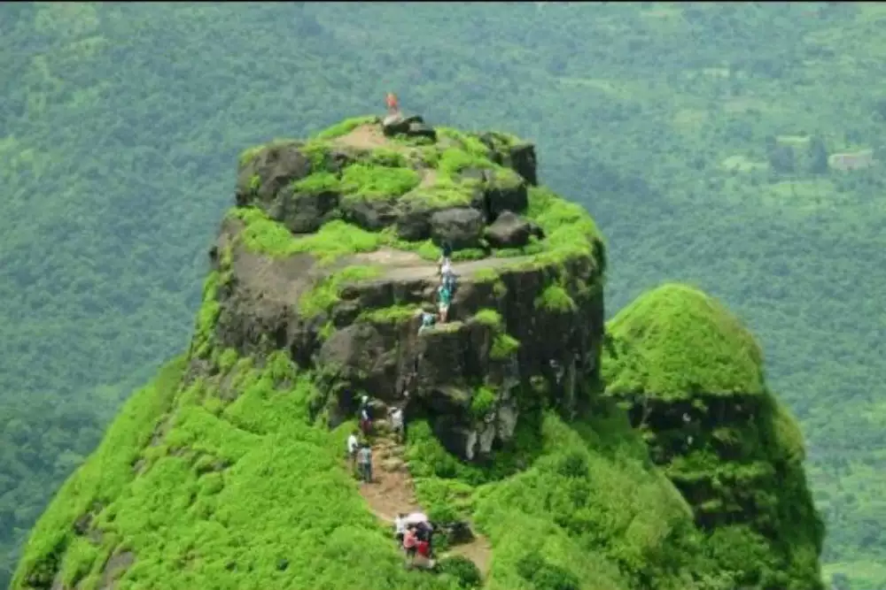

कलवंटिन किल्ला
Location : Click Here For Google Map
- माहिती
- कलवंटिन किल्ला, रायगड जिल्ह्यातील एक ऐतिहासिक किल्ला आहे, जो १६व्या शतकात बांधला गेला. हा किल्ला प्रबळगड किल्ल्याजवळ उभा आहे आणि त्याचा शिखर २३०० फूट उंचीवर स्थित आहे. किल्ल्याच्या चढाईची रस्ता फारच तीव्र आणि अरुंद आहे, ज्यामुळे इथे ट्रेकिंग करणे एक मोठे आव्हान ठरते. किल्ल्याच्या शिखरावरून आसपासच्या सह्याद्री पर्वतरांगा आणि प्रबळगड किल्ल्याचे दृश्य खूप सुंदर दिसते. किल्ल्याचा प्रमुख आकर्षण म्हणजे त्याचे संकुचित, खडकात कोरलेले पायर्या आणि अप्रतिम दृश्य. वर्षाऋतूमध्ये हा क्षेत्र हिरव्या कवचात माखलेला असतो, आणि ट्रेकिंग प्रेमींना तेथे एक अद्वितीय अनुभव मिळतो.
Explore the historical beauty
